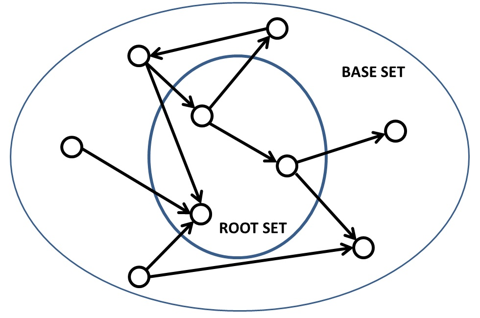
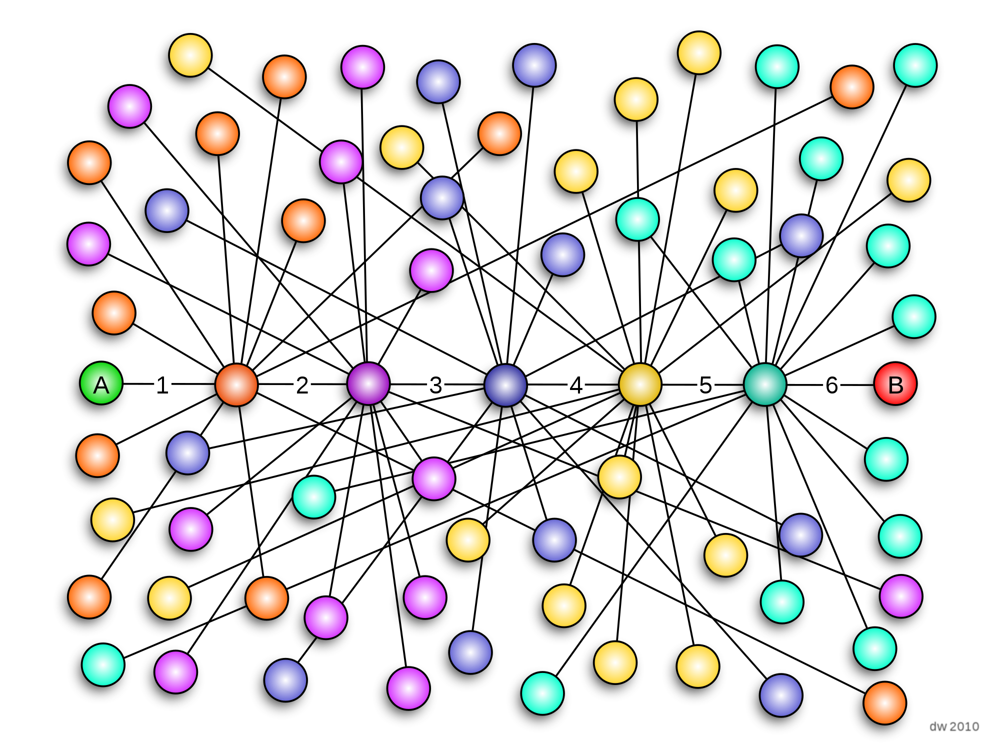
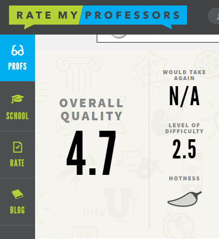

HITS Algorithm
Jon Kleinberg is most famous for his contribution of the HITS algorithm. The objective of the HITS algorithm is to make use of the link structure of the web in order to discover and rank pages relevant for a particular topic. It greatly influenced the internet as we know it, as it allows users to effeciently access the information they need instead of scrolling though pages of irrelevant links. Thanks to Jon Kleinberg, users are able to access desired information within seconds.
Jon Kleinberg – 42 minutes ago
HITS Algorithm
This is an illustration of how the HITS Algorithm works. In the HITS algorithm, the first step is to retrieve the most relevant pages to the search query. This set is called the root set and can be obtained by taking the top pages returned by a text-based search algorithm. A base set is generated by augmenting the root set with all the web pages that are linked from it and some of the pages that link to it. As mentioned above, the HITS algorithm is what Jon Kleinberg is most famous for. It is implemented in most browser websites today.
Jon Kleinberg – 42 minutes ago
Small World Experiment
Kleinberg is also known for his work on algorithmic aspects of the small world experiment. He was one of the first to realize that Stanley Milgram's famous "six degrees" letter-passing experiment implied not only that there are short paths between individuals in social networks but also that people seem to be good at finding those paths, an apparently simple observation that turns out to have profound implications for the structure of the networks in question.
Jon Kleinberg
Small World Experiment
This image illustrates the social links between individuals, as demonstrated in Milgram's Small World Experiment. Kleinberg takes the ideas from Milgram's experiment, and brings it to the world of computer science. Understanding how people interact can potentially create huge strides in the future development of networking on the internet.
Jon Kleinberg
Teaching
Kleinberg's teaching carrer is significant because through it, he is able to pass on his work for generations to come. He is a highly respected and revered by both students and staff. On the website, rate my professors, the reviews are filled with nothing but praise. His work inspires young people to add on to his research and start their own.
9 minutes ago
Jon Kleinberg
"Jon Kleinberg." Jon Kleinberg's Homepage. Cornell, 2007. Web. 25 May 2017.
Jon Kleinberg at Cornell University." Jon Kleinberg at Cornell University - RateMyProfessors.com. Rate My Professors, n.d. Web. 25 May 2017.
"MacArthur Fellows Program." RSS. MacAurthur Foundation, 1 Sept. 2005. Web. 25 May 2017.
"WWW2013 - Rio De Janeiro, Brazil - 22nd International World Wide Web Conference | 13th - 17th, May." Jon Kleinberg: A Computational Anatomist of Social Networks | WWW 2013 – Rio De Janeiro, Brazil. N.p., 05 Apr. 2013. Web. 25 May 2017.
2 minutes ago